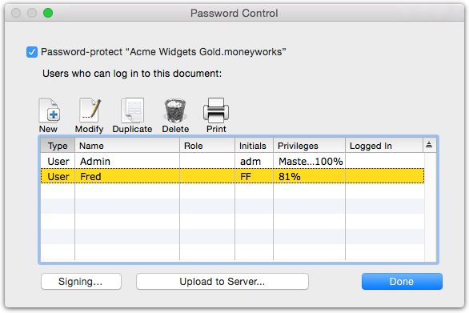
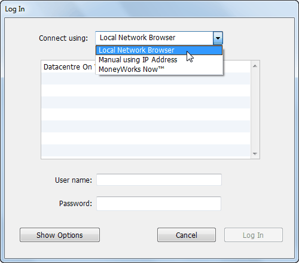
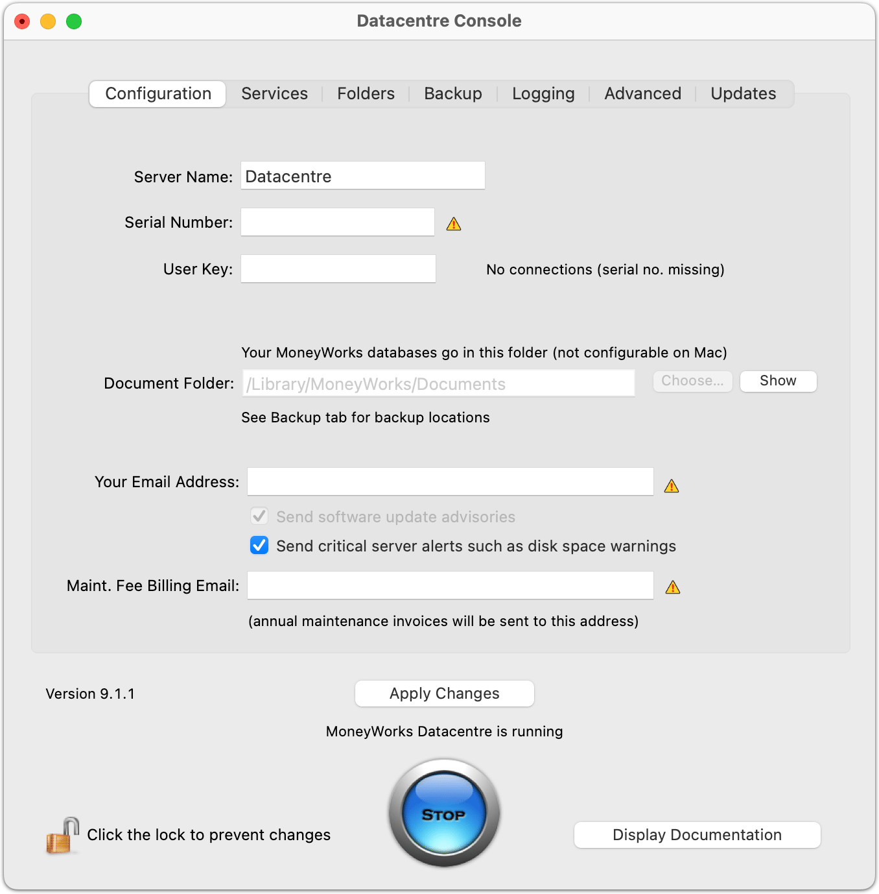

Uploading a
File to Datacentre or MoneyWorks Now
To upload a MoneyWorks file stored locally to either your Datacentre
or MoneyWorks Now:
Open
the file using the Open button on the MoneyWorks Welcome
page
Choose File>Users & Security
The Password Control window will open

If
the file is not password protected, you will need to password protect your
file by turning on the Password Protect <Document>
checkbox.
You will also need to ensure that the user you are logged in as has a
password (a blank password is not allowed).
Click the Upload to Server
button
If your username does not have a password, set up a password first.
To do that, double-click your username (Admin if you
have only just enabled password protection) and set a password.
The standard MoneyWorks network login window will open

If
uploading to a MoneyWorks Datacentre on the local network
Choose Connect using Local Network Browser and select
the Datacentre from the list of available Datacentres (normally there
will just be one).
The Datacentre must be running in ASP Mode. You will need to enter
the Datacente User (Target directory) and Password. This will identify
the subfolder that you will upload to. If uploading to the top level of
the Documents root, use "root" as the username.
Click the Log In button and the file (and any custom
plug-ins) will upload.
If uploading to
a remote MoneyWorks Datacentre
Choose Connect using Manual using IP Address and enter
the IP address of domain name of the server.
If there is a security certificate on the remote Datacentre, turn
on the SSL
MoneyWorks Datacentre Server setup
option.
If the Datacentre is running in ASP Mode, you will need to enter
the Datacente User (Target
directory) and Password.
Click the Log In button and the file (and any custom
plug-ins) will upload.
If uploading to MoneyWorks
Now
Choose Connect using MoneyWorks Now and enter your
MoneyWorks Now login credentials.
A Log In window will be displayed showing you the list
of folders that you own (you can only upload to a folder that you own).
Choose the folder and click Log In. The file will
upload.
Note: Before uploading a file to MoneyWorks Now, you
should ensure that you have a sensible company name in Show>Company
Details. This is the name that will be displayed when you log in to the
file on MoneyWorks Now.
Notes on uploading files
It is a good idea to make sure that your file has a sensible name.
Avoid names like “Backup of backup of XYZ Accounts
[20170331].moneyworks” (rename the file before opening it for
upload).
When you upload a file, it—along with any custom plug-ins—is
compressed and uploaded to the selected server. If a file of the same
name exists on the server, you will asked if you want to replace it.
You should not upload two different documents with the same company
name, but if you do, the second one will have the filename appended in
your documents list so that you can differentiate them.
If you do not want to upload the Custom Plug-ins along with the file
(these will replace any existing ones in the targeted directory on the
server), ensure that there is no MoneyWorks Custom Plug-ins
folder in the same location as the file you are uploading (it is often
easier to move the MoneyWorks file to a new, empty directory prior to
opening it for upload).
1 This is controlled by
the Run on server if possible option in the report settings.↩︎
MoneyWorks Datacentre Server setup
Here's the short version of the steps to setting up MoneyWorks
Datacentre Server.
Install the Datacentre server software Mac: Open
the installer: Datacentre.pkg.
Windows: Open the installer:
DatacentreSetup.exe.
Also install client software from the MoneyWorks Gold installer on
your client workstations. One of these can use the full Gold serial
number; the others will be installed as Datacentre Client only.
Important: If you are installing on macOS Catalina or later, you must
give MoneyWorks Datacentre Console Full Disk
Access in order for Datacentre to work. MoneyWorks 8.1.8 or later is
required for macOS Catalina compatibility.
Use the MoneyWorks Datacentre Console application. The Windows
installer will start this for you; on Mac you can find it in
/Applications.
You need to enter your serial number(s), contact email addresses, and
other configuration information. Then click Apply Changes
Make sure the computer you install MoneyWorks Datacentre on is set to
not go to sleep. If it sleeps, users may not be able to log in, or
connected users may have their connection hang. If the server is a Mac
see how
to prevent
sleep on a Mac.
Place
your existing MoneyWorks document(s) in the Datacentre's documents
folder.
On Mac, you wil also need to open the Console and allow it to set the
ownership of the files so that the server can access them.
For
a single-company server, you will need to select the company document to
share in the Document tab of the Console.
If you are just getting started with MoneyWorks, you will first
create your accounts document(s) using the full license install of
MoneyWorks Gold, then use the Upload to Server function or place the
document(s) in the server folder when you are ready to share them.
Upgrading a Datacentre
On Windows, Datacentre 9 requires a 64-bit Windows OS. Please make
sure your Windows is 64-bit before installing v9. Type System
Information in the Windows search box, and open the matching app.
Then look for System Type in the System Summary. It should say x64-based
PC. If it says X86-based PC, you have a 32-bit Windows version.
If your Datacentre is on subscription (serial number has an R as
the second letter), there is nothing much to do. Upgrading to v9 from v8
is the same as updating to any point release using Check Now in the
Updates tab of the Console.
If your Datacentre is on maintenance (serial number has an 8 as
the second character), you will receive a new serial number (with a 9 in
the second place). Enter your new Datacentre 9 serial number into the
Serial Number field, then click on the Updates tab and click Check Now.
Install the update.
File conversion from v7
If upgrading from v7, once installed, open the MoneyWorks Datacentre
Console application, select the Folders tab, and click “Upgrade Files to
v9”. This will convert files to v9 format. This may take some time if
you have large files. Please be patient.
On successful conversion. the file extension (if any) will be
.moneyworks. The old file will be renamed with”(archived)”. Files with
“(archived)” in the name will no longer be considered for conversion.
You can remove these archived files if you wish. The server will no
longer access them.
File conversion from v8
Nothing to do. Databases will be upgraded the first time they are
opened.
Installation
macOS
Download the Datacentre.pkg installer
package.
Double-click the Datacentre.pkg icon.
Follow the on-screen instructions to complete the
installation (you will need to be logged in as a user with Administrator
privileges, and you will be asked to provide your
password).
On macOS Catalina and later, you must give MoneyWorks
Datacentre Console Full Disk
Access.
The Mac installation process installs the following:
Console.app
Windows
Note: MoneyWorks Datacentre v9 requires a 64-bit version of
Windows.
Locate
the downloaded setup program (DatacentreSetup.exe)
Open DatacentreSetup.exe and follow the onscreen
instructions.
The Windows installation process installs the following:
C:\Program
Files\MoneyWorks Datacentre\
Note that if you are upgrading a previous installation (v7, v8) the
installation will be in the same location as the previous installation,
overwriting it (i.e.
Program Files (x86) ). For a new install, the install directory will
be
C:\Program
Files\MoneyWorks Datacentre\
Windows permissions rules, the directory cannot be on a mapped
network drive.
Installing Client Software
C:\
drive. You can relocate this in
The MoneyWorks Datacentre client software is MoneyWorks Gold. You can
install this from the downloadable MoneyWorks Gold
installer.
The MoneyWorks Datacentre Console will start
automatically at the completion of installation.
MoneyWorks Documents
Directory
Mac: On installation, a server home directory is
created at /Library/ MoneyWorks/ . This home directory contains a
Documents subdirectory.
The first time MoneyWorks Gold is opened on a particular computer
(actually for a user account on the computer), it will ask for
registration information.
 Windows: On
installation, a data directory called will
Windows: On
installation, a data directory called will
MoneyWorks Documents
be created in the root directory of the drive.
C:
This directory is where you should put the MoneyWorks document(s)
that you
want to share. It contains 2 subfolders called and Archives . The
Backups
Datacentre will automatically place backups and archives of your data
in these. See the section Backups and Archives.
If you want to place your data files elsewhere, you can configure a
different server data directory using the Console, but if you do this,
it will require careful consideration of folder permissions.
Mac: The server’s home directory has ownership
moneyworks_server:staff.
You must be in the staff group to be able to add files to the
Documents directory (all normal users are in the staff group by
default). If you change the location of the Documents directory, you
will need to ensure that the
One full MoneyWorks Gold
installation
user has access to the new location (including access to
moneyworks_server
all parent directories of that location; in practice this is hard to
do, so we advise not doing it unless you really know what you are
doing—for an easy life, just use the default Documents directory).
Windows: If you want to secure the files that you
put in here, then you should adjust the permissions for this directory
as appropriate (The Datacentre runs using the System account, so you do
need to ensure that the System account has read and write privileges for
this directory). Per normal
MoneyWorks Datacentre comes with one MoneyWorks Gold registration
number to enable full standalone functionality (in particular for
creating new accounts documents). You can enter this registration number
on one computer (it will be in the form xxG-nnnnn-nnnnn). You can use
that computer for creating new MoneyWorks accounts documents and setting
them up before sharing them with other users by placing them in the
Datacentre documents folder on the server. On this computer, select
"Full functionality with local company files" and enter your the serial
number and click OK.
All other client
installations
For all other computers that you install the client software on—for
use only with the Datacentre server—no registration information is
required: Select "Demonstration Mode or Network Client" and click
OK.
Updating client software
You only ever need to install the client software on a particular
workstation once. Whenever the Datacentre software is updated on the
server, software updates are delivered to clients automatically when
they next log in (installing these client updates will typically require
the user to have admin privileges on their computer).
Additional full
MoneyWorks Gold Installations
If you have additional MoneyWorks Gold serial numbers, you can enable
full standalone functionality on as many computers/user accounts as you
have serial numbers. Every installation that has a full MoneyWorks Gold
serial number will have the ability to create new MoneyWorks documents
and continue to use them beyond the demo period (Clients without a
serial number can create documents, which can be accessed for 45 days in
standalone mode). Logging in to the server using these additional
MoneyWorks Gold serial numbers does not consume a concurrent client
login on the server.
Starting the Datacentre
Place your documents
MoneyWorks Datacentre will serve any MoneyWorks documents that it
finds in its Document Folder. By default, this directory will be
/Library/MoneyWorks/
(on macOS), or C:\MoneyWorks Documents\ (on Windows).
Documents/
You should move your MoneyWorks documents to this directory, along
with your MoneyWorks Custom Plug-Ins folder if you have custom reports
and forms. If you have several documents that use different custom forms
and reports, you can create subdirectories in the documents folder and
place a MoneyWorks
document together with its particular MoneyWorks Custom Plug-Ins
folder into each one. When clients log in to a document for the first
time, the corresponding MoneyWorks Custom-Plug-Ins folder will
automatically download to their workstation. See Whither Plug-ins for more information.
You can put documents created by Moneyworks Cashbook or MoneyWorks
Express in the Datacentre Documents folder and these will be shared as
if they were MoneyWorks Gold documents. If you wish to use the documents
in future with MoneyWorks Express or MoneyWorks Cashbook, be sure to
avoid using any features not supported by those products (e.g.
Departments, Inventory, or extended Job Costing)
Don't file-share
The document root directory should not be available to normal users
via file sharing. This might tempt them to try to bypass the Datacentre
server and open the files directly (Client-only installations won't
allow direct opening of documents, but a user with a full Gold
installation could do this). The MoneyWorks Datacentre service will open
documents on demand when clients connect to the server.
MoneyWorks Datacentre does not share data using
the operating system’s File Sharing facilities.
Don’t open Datacentre-shared files directly using the Open
command in MoneyWorks Gold.
Don’t double-click files in the folder to open them. Opening
files in this way will prevent the server from opening them and other
users will not be able to access them.
Password Protection
You should enable password protection before placing a document for
sharing by the Datacentre. If you don't do this, users will be logged in
anonymously and you will not be able to see who is logged in. Also,
per-user settings will not be stored if users are not set up.
Start on reboot
There is no need to reboot the server after installation. The
MoneyWorks Datacentre is configured by default to start itself if the
machine is rebooted.
The installer will start the server for you.
If you need to manually start (or stop) the server, here is how:
On the server, open the MoneyWorks Datacentre Console in
Applications (macOS) or in the Start menu (Windows)
On Mac you will need to authenticate as an Administrator
by clicking the lock icon and entering the password for your user
account.
Click the green Start button (if the button is a blue
Stop button, the service is already running).
Configuration

On
the server, double-click the MoneyWorks Datacentre Console icon in
Applications (macOS) or in Program Files\MoneyWorks Datacentre\
(Windows)
On Mac you will need to authenticate as an Administrator
by clicking the lock icon and entering the password for your user
account.
On Windows you may need to Run as Administrator (if you do not, and
you are logged in without Administrator privileges, you will be invited
to reopen the Console app with Administrator privileges)
Type
a name for your Datacentre server in the Server Name field.
By default, the server name is Datacentre. This is the name
advertised on Bonjour, and will also be used for the name of the folder
into which custom plugins folders are downloaded to clients.
You should give your Datacentre server a unique name. (e.g. XYZ Corp
Datacentre).
If you are a MoneyWorks consultant/support provider we strongly
advise that you give each Datacentre you install a unique name. This
will have the effect of keeping custom plugins downloaded from each site
separate on your client computer.
Enter
your Datacentre Serial number in the Serial No. field. Your Datacentre
serial number looks like:
C9D-NNNNN-NNNNN or CRD-NNNNN-NNNNN
(C represents your country code, and the N's are digits. The third
letter will be a 'D'). Note: The code in a retail box may begin with
ACT—If you have an ACT code, type it in and click Fetch Serial Number to
fetch your serial number from the Cognito activation server.
If
you have a user key to extend the number of concurrent users, type it
into the User Key field. User Keys look like:
C9U-NNNnn-NNNNN
The nn part specifies the number of additional concurrent users.
Cognito will email the admin contact address with notification of
software updates.
Your server will email low disk space warnings or backup failure
notifications to the admin contact address.
Cognito will email annual maintenance fee invoices to the billing
contact address.
Note: The MoneyWorks Datacentre Console is a program
that configures and starts or stops MoneyWorks Datacentre—the Console
application is not the server. Closing the Console application will not
stop the server.
Firewall
On Windows, the installer will add MoneyWorks Datacentre to the
Firewall exceptions list automatically.
Backups
It is very important that have a backup regime in place to protect
you from:
storage device failure (the SSD or hard disk in your
server may fail)
fire, flood, theft, or other disaster (the whole computer
may be destroyed or lost)
inadvertent or malicious deletion/corruption of
data
The Backups tab is the place to configure the local backup and
archive locations.
Auto Backup and Archive
You should have this option checked. If unchecked, no backups or
archives are made automatically.
When checked, documents will get automatically backed up whenever
they close.
If a new period has been opened, then the backup also goes into the
Archives folder and is dated so that it will not get overwritten.
Otherwise backups go into the backups folder and are stamped with the
day of week (1-7). Week-old
backups will therefore get overwritten.
Either of these can be changed. Click the
browse button next to the path
field to select the desired location. If the path in the field is
invalid, a warning icon will be displayed next to it.
Prior to v9, the Archive backup would be instead of the
regular backup. In v9 both are done.
In v9, a backup is only made if the database was changed. Backup
frequency may also be limited by the "Don't back up again within N
hours" setting in the Advanced tab of the Console. This is to prevent
loading the serer with excessive backup tasks when the database may be
getting accessed regularly robots.
Also, in v9, the folder hierarchy and folder security (i.e. the
folder.conf files) will be backed up nightly into files of the form
!folder config backup.n.mwgz .
...
Important: You must ensure that the Backup and
Archive paths are valid and are writable by the service. Verifying this
is especially important if you have chosen to write backups to a file
server volume. Specifying a location on a file server that is not always
available will probably result in failed backups. You will not get any
notification of failure to write backups other than a log entry. With a
Windows server, the Save a Backup As command will fail on clients if the
Backup directory is not valid or writable.
If you open several periods in advance, you won't get archives for
those periods. Don't open periods in advance.
These auto-created backup files offer some protection from scenario
#3, above. What about #1 and #2? If your MoneyWorks Datacentre is hosted
in a Virtual Private Server, and your hosting provider is backing up the
entire server image nightly, and you trust that your hosting provider
will not disappear, then that may be enough. Otherwise, an off-server
backup is strongly advised.
Off-server/off-site backups
By default, the Backups and Archive folders reside in the same
location as the documents. This makes it easy to locate backups if you
need to go back to an old version of a database for some reason
however it offers no protection against storage device failure
or server theft or destruction. You must set
up some mechanism to back up data on another device, and in another
location.
You can change the Backup and Archive paths to point to a location on
another device, preferably on another computer. This will provide
protection from disaster scenario #1 (storage device failure). However,
on Windows, see Network
Backup paths on Windows,
Backup Path: Path to the directory where backups
will be written. By default this is the Backups folder inside the
MoneyWorks Documents folder.
Archive Path: Path to the directory where archives
will be written. By default this is the Archives folder inside the
MoneyWorks Documents folder.
What else should I back up?
For a quicker recovery from a catastrophic server loss, you may also
want to back up your Datacentre server settings. On Mac, these are at:
MoneyWorks/Library/Preferences/ , and on Windows, they are at:
C:\ProgramData\Cognito\MoneyWorks Datacentre\ . This folder also
contains Pids and Logs folders which do not need to be backed up.
/Library/
Easy
cloud data backup using Dropbox, OneDrive, Google Drive, or iCloud
drive
The easiest way to get a reliable off-site backup is to have the
auto-created backups stored in a cloud-backed folder such as a Dropbox
folder. These instructions apply just as well to OneDrive or Google
Drive.
If necessary, install and configure your preferred cloud
storage service client software on the computer
Create Backup and Archive folders in a subfolder of your
cloud storage folder
Set the Datacentre Backup and Archive paths to those
folders
or
This will be something like /Users/you/Dropbox/MWBackups/Backups
C:\Users\you\Dropbox\MWBackups\Backups . Likwise Archives.
Make sure the cloud storage account you use has enough
storage capacity
for your backups.
Restoring a multi-tenanted (ASP) Datacentre
backup
If your server had many documents in many folders and you need to
restore the entire server's MoneyWorks data after a complete server loss
and rebuild, you can use the moneyworks command line tool to restore the
most recent backup of each file in a Backups directory (which
you had an off-server backup of, and have restored from that backup).
This will also recreate the folder hierarchy and folder security for an
ASP server from the latest folder config backup.
Use the CLI restore command for this.
First, after reinstalling MoneyWorks Datacentre and restoring the
Backups folder from your off-server backup. Then you can reconstruct the
Documents hierarchy with one CLI command (your paths may be
different):
Mac: |
| moneyworks -e 'restore source="/Library/MoneyWorks/Documents/ |
|
|
| Backups" dest="/Library/MoneyWorks/Documents"' |
|
| Windows: |
|
|
|
| moneyworks.exe -e 'restore source="C:\MoneyWorks
Documents\Backups" |
|
|
|
| dest="C:\MoneyWorks Documents"' |
|
|
Important: DO NOT use 3rd party backup software to
back up the entire main Datacentre Documents folder ESPECIALLY on
Windows. Windows backup software will typically lock files it is backing
up and interfere with the operation of the Datacentre server. You should
only back up the Backups and Archives folders. Don't allow antivirus
software to scan MoneyWorks files. This may prevent Datacentre from
accessing files and lead to data loss.
Network Backup paths on
Windows
Windows Services (such as MoneyWorks Datacentre) do not, by default,
have access to network shares. Therefore if you want backups and
archives to be written to a volume that is not locally attached to the
server that Datacentre is running on, you will need to set MoneyWorks
Datacentre to run as a user who has privileges to access the network
volume to which you wish backups to be written.
In Services, right-click on the MoneyWorks Datacentre service, and
click the Log On tab. Here you can specify a user name and password of a
user that the service will run as. Note that this user must also have
read/write access to the files that the Datacentre will be serving,
otherwise it will of course not be able to access them.
In addition, any
network paths should be specified in UNC format (\\server\
share\directory), not with a drive letter. Note that
there is no trailing \ on the end of the path to the folder.
Restoring a Backup
To restore a single document backup, open the desired .MWGZ backup
file in MoneyWorks Gold. You will be asked for the location to save the
restored file. If restoring a backup for access via the server, save it
back into the server's Documents folder. To ensure convenient access for
clients using their existing Recent shortcuts, you should restore it
using the original filename.